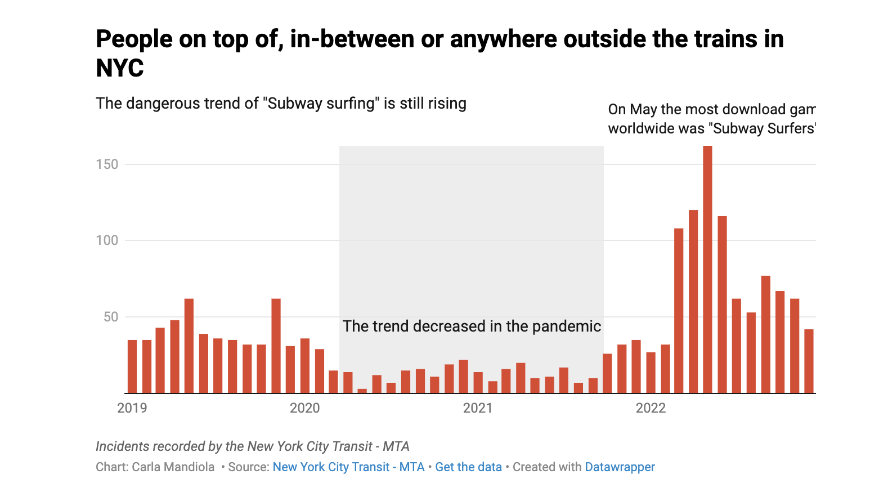

Recopilé los antecedentes de 407 futbolistas de los 16 clubes que juegan actualmente en la Primera División. Al cruzar
los datos, surgió una contundente radiografía que revela el origen del talento nacional en este deporte.
Gran parte nace en las comunas agrícolas. La Región de Tarapacá resultó ser una inesperada fábrica de jugadores.
Las zonas extremas no tienen representación. Y el centro del país sigue siendo la gran cuna de futbolistas,
aunque si se toma en cuenta la cantidad de habitantes, se impone una pequeña y tranquila ciudad: Quillota.

The latest data shows that Line 7 became the most popular for subway surfing in NYC, and the numbers rose in spring. Why is this sill happening?
With the use of FOIA I got acces to the subway surfing incidents,
fatalities, and safety measures taken by the authorities over the past decade.

A toy story: 3d models of toys in New York. Using Polycam, and editing with modelviewer.dev, I created 3D models of toys from an Italian baby that
started to live in New York.

If someone asks you today if you are happy, your answer may be different tomorrow. Happiness changes as events occur, but in 2012, three economists, John Helliwell, Richard Layard, and Jeffrey Sachs, believed they could measure it.
They created the World Happiness Report, which measures six different topics that explain happiness around the world.

Finding a Citi Bike in New York City is not always easy. Is common to see stations with no bikes or no docks available. The only borough with stations in its total area is Manhattan, and Staten Island is not included in the system. And of course, that means that there are limits of where you are going to go in the city.

What happens when the biggest pop star supports a candidate? People give money.